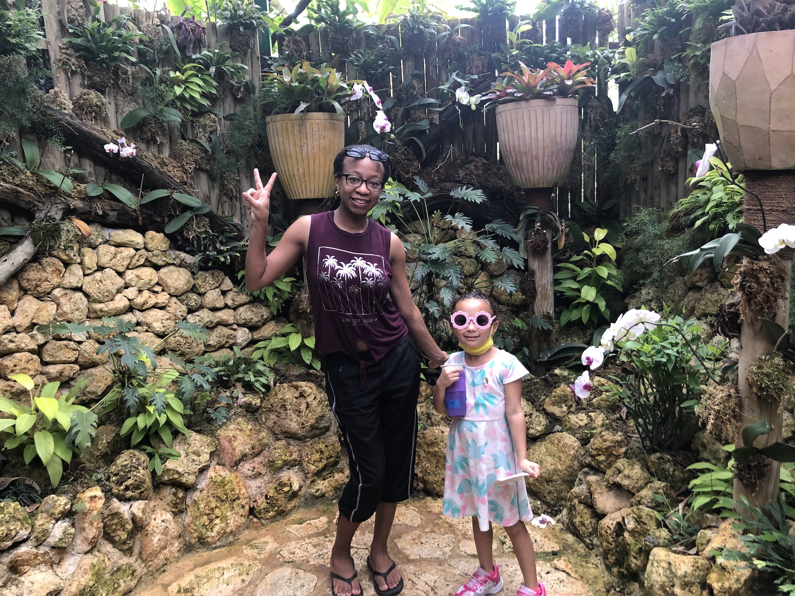

Hi there! Seems that you discovered my little slice of the internet. Please feel free to read my blogs about my experiences from banking to motherhood. If my writings can help one person, then creating this website was worthwhile. Before discovering the wonderful world of coding, I used to work in the banking industry for over 5 years. I did it all, from account set-up to mortgage applications. But after a while, I knew I wanted something more from my career. It wasn't until I had my daughter that I decided to take the plunge and dive head first into teaching myself programming. Eventually my diligence paid off and I became part of a great program called Apprenti. I then survived 5 months of extreme technical training, earning the right to call myself an Software Developer. When I am not coding, I love to travel, beat my husband in video games, and convince my toddler that there are more words in the English language other than no. I am always working on something new so be sure to come back and check them out.
 My Portfolio